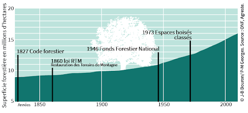
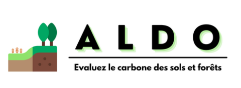

La gestion durable des forêts est un sujet d’actualité, accentué par la gravité du changement climatique qui, jour après jour, modifie notre environnement.
L’importance de ce sujet a été l’objet d’un webinaire récent, rassemblant les experts suivants :
- Guy Chauvin, Responsable du service agriculture et forêt pour la communauté de communes de Cœur de Savoie
- Anthony Perrin, Chargé de mission environnement développement durable pour la ville de la Motte- Servolex (Savoie)
- Guillaume Bastide, Programme Territoire Engagé Transition Écologique, collectivités, site territoire et climat Service Politique Territoriale
Depuis 1850, la surface forestière française a doublé, atteignant 17,3 millions d’hectares. En volume, elle est la 3ème d’Europe avec 2 935 millions de m3. (Source Mémento FCBA 2022 https://www.fcba.fr/wp-content/uploads/2023/01/Memento-2022-WEB.pdf)

L’importance des forêts dans la lutte contre le changement climatique
Le rôle des forêts dans la séquestration du carbone
Les forêts jouent un rôle crucial en agissant comme des « puits de carbone ». Elles absorbent le CO2 atmosphérique, un gaz à effet de serre, pour leur croissance et le stockent dans leur biomasse. Ce processus, appelé séquestration du carbone, est un atout majeur dans la lutte contre le changement climatique.
Les forêts, couvrant près d’un tiers du territoire français, jouent un rôle crucial dans l’atténuation du changement climatique, en captant approximativement 10% des émissions annuelles de CO2 du pays. (Source : https://www.cea.fr/presse/Pages/actualites-communiques/environnement/effondrement-capacite-forets-francaises-absorber-CO2.aspx)
Les forêts bien gérées et en bonne santé ont une capacité de séquestration optimale, une étude de l’Université de Leeds a montré que les forêts intactes absorbent environ deux fois plus de carbone que les forêts dégradées.
“Les forêts françaises sont en crise et leur absorption de carbone est en forte diminution. Le rôle de la forêt pour la captation du carbone et la production de produits du bois doit être soigneusement ré-évalué pour les objectifs nationaux de neutralité des émissions nettes. Philippe Ciais” (Source : https://www.cea.fr/presse/Pages/actualites-communiques/environnement/effondrement-capacite-forets-francaises-absorber-CO2.aspx)
Les pressions auxquelles sont confrontées les forêts à cause du changement climatique
Le changement climatique menace aussi la santé des forêts. Les sécheresses, les tempêtes, les incendies et les maladies sont exacerbés par le réchauffement global, mettant en danger leur capacité à séquestrer le carbone.
En 2022, plus de 66 000 hectares de forêt ont brûlé en France. (Source : https://fr.statista.com/statistiques/1321001/hectares-forets-brules-france/)
Le puits de carbone forestier a été divisé par 2 entre 2010 et 2020, baisse liée principalement à une baisse de la croissance et une surmortalité liée au réchauffement climatique. Il est nécessaire de garantir en continu un taux de prélèvement de bois inférieur à la croissance annuelle des arbres afin de garantir une gestion durable de la forêt.
Le taux de prélèvement est de l’ordre de 55% de l’accroissement biologique annuel : un des risques du changement climatique c’est une baisse de l’accroissement biologique annuel par une hausse des dépérissements prématurés (sécheresse, attaques d’insectes xylophages).

Les outils de diagnostic pour la gestion durable des forêts
Présentation de l’outil ALDO
Un outil notable mentionné lors du webinaire est ALDO, développé par l’ADEME. ALDO est un outil en ligne gratuit et en open data, de diagnostic des stocks et des flux de carbone des sols et de la biomasse des territoires : cultures, prairies, haies, sols urbains, forêts, zones humides… L’outil donne des estimations communales agrégées à l’échelle des EPCI. Il vise à la fois à sensibiliser les collectivités sur le sujet de la séquestration de carbone, à donner des ordres de grandeur et des méthodes de calcul, et à montrer les enjeux et leviers pour chaque territoire : préservation des stocks existants, limitation de l’artificialisation des sols, du retournement des prairies, pratiques agricoles stockantes, gestion durable des forêts, etc.
Pour le secteur forestier, ALDO s’appuie sur les données de la BD Forêt v2 de l’IGN qui donne les surfaces communales pour chaque type de peuplement, ainsi que l’Inventaire Forestier National qui détaille dans chaque sylvoécorégion les volumes et stocks de carbone, les facteurs d’accroissement biologique, de mortalité, de prélèvements, afin d’ajuster l’estimation du puits forestier actuel.
ALDO s’adresse aux intercommunalités qui sont concernées par la réalisation d’un Plan Climat Air Énergie Territorial (PCAET), mais aussi les bureaux d’études, les observatoires climat régionaux pour la mise à disposition de données.

Les autres outils de diagnostic existant pour la gestion durable des forêts
Dans le domaine de la sylviculture, l’objectif principal est de concilier une production optimale avec la préservation des écosystèmes forestiers. À cet égard, divers outils de diagnostic ont été développés pour répondre à des besoins spécifiques.
En complément du bien connu ALDO, voici quelques-uns des outils les plus plébiscités par les professionnels du secteur :
- Sols forestiers : Un sol sain est fondamental pour une forêt florissante. FOR-EVAL est un outil incontournable qui permet une évaluation précise des sols forestiers. Développé par l’INRAE de Bordeaux-Aquitaine, il sert d’application mobile pour évaluer en détail la qualité des sols. Plus d’informations peuvent être trouvées ici.
- Biodiversité : Préserver la diversité biologique est une priorité. L’outil IBP (Indice de Biodiversité Potentielle) est conçu pour évaluer le potentiel de biodiversité d’une zone donnée. Grâce à cet indice, les forestiers peuvent avoir une meilleure compréhension de la faune et de la flore locales. Pour en savoir plus, rendez-vous sur ce site.
- Dépérissement : Les phénomènes de dépérissement peuvent gravement affecter les forêts. Les outils ARCHI et DEPERIS sont essentiels pour diagnostiquer et anticiper ces situations délicates.
- Réserve utile en eau : La quantité d’eau disponible est cruciale pour la santé des forêts. BILJOU a été développé pour évaluer la réserve utile en eau d’un terrain, permettant ainsi une meilleure gestion hydrique.
- Aires de compatibilité climatiques/choix d’essences adaptées : Face aux défis climatiques, il est crucial de choisir les essences d’arbres adaptées. Les outils ClimEssences et BioClimSol guident les sylviculteurs dans cette démarche en tenant compte des projections climatiques.
Ces outils, combinés à une expertise professionnelle, assurent une gestion saine et durable des forêts pour les générations futures.

L’importance du développement de stratégies d’adaptation
Les stratégies d’adaptation peuvent inclure des pratiques sylvicoles visant à renforcer la résilience des forêts, comme l’amélioration de la diversité des espèces ou de la structure des peuplements forestier ou la mise en gestion de peuplements sinistrés ou dépérissant pour augmenter leur résistance aux perturbations.
La monoculture, qui se caractérise par la culture d’une seule espèce d’arbre sur une vaste superficie, entraîne généralement une augmentation de la vulnérabilité des peuplements aux aléas bioclimatiques et limite la biodiversité.
De plus, l’utilisation d’espèces d’arbres non adaptées à l’environnement local actuel et futur (par exemple planter des épicéas à 400m d’altitude, alors qu’il faudrait un minimum entre 600 m et 1 200 m selon l’espèce) – peut aboutir à un appauvrissement des sols mal nourris et à une plus grande vulnérabilité aux sécheresses et aux canicules et aux ravageurs.
Le rôle de la coopération dans la promotion de la gestion durable des forêts
Présentation du programme « Territoire Engagé Transition Écologique »
Le programme Territoire Engagé Transition Écologique, souligné lors du webinaire, permet notamment aux collectivités d’être accompagnées dans la gestion durable de leurs forêts et de partager leurs bonnes pratiques entre pairs.
Ce programme incite en effet à une coopération accrue entre les différents acteurs, favorisant ainsi une approche holistique de la gestion des forêts.
Dans le cadre du programme, des actions concrètes ont été mises en œuvre, notamment des ateliers de transmission de connaissances et d’échanges entre les collectivités. Ces initiatives favorisent le partage d’expériences et de solutions innovantes en matière de gestion forestière.
Le référentiel Climat-Air-Energie du programme Territoire Engagé Transition Écologique inclut des indicateurs et des exemples d’actions pour soutenir l’utilisation durable des forêts et des espaces boisés.
- Le programme Territoire Engagé Transition Écologique incite chaque collectivité à mettre en place, valoriser ou à échanger autour d’actions favorables à la forêt : La collectivité prend en compte la forêt et les espaces boisés dans ses documents d’urbanisme, dans un objectif d’identification, de préservation, d’utilisation rationnelle ou de développement.
- Elle incite aux pratiques sylvicoles durables et au développement des pratiques de gestion raisonnée des forêts et espaces boisés, en interne et auprès des particuliers et des professionnels.
- Elle contribue à structurer et à développer des filières bois-énergie et bois-construction.

Quelques exemples de bonnes pratiques
Expansion de la forêt malgré la pression foncière :
L’expansion de la forêt malgré une forte pression foncière due à l’urbanisation et à l’agriculture témoigne d’une gestion forestière efficace. Cette performance est le résultat de politiques et de mesures de préservation des espaces forestiers. Des stratégies de reboisement, d’aménagement et de protection des forêts ont été mises en place pour maintenir leur superficie et leur intégrité. Ces actions ont permis de préserver les écosystèmes forestiers, de maintenir la biodiversité et de prévenir la dégradation des sols.
Préservation des forêts alluviales :
La préservation des forêts alluviales est un exemple remarquable de bonne gestion forestière. Ces écosystèmes riverains jouent un rôle crucial dans la régulation des cours d’eau, la prévention des inondations et la protection de la biodiversité. Leur conservation nécessite des politiques de préservation spécifiques, telles que des zones tampons et des restrictions d’aménagement. Des mesures de restauration et de gestion adaptées, comme la reconnexion des cours d’eau avec leurs plaines inondables, contribuent également à maintenir l’intégrité écologique de ces forêts.
Adaptation des forêts au réchauffement climatique :
L’adaptation des forêts au réchauffement climatique est une stratégie cruciale pour leur survie à long terme. Cette performance met en évidence la mise en place de mesures proactives pour faire face aux changements environnementaux. La sélection d’essences d’arbres résilientes et adaptées aux nouvelles conditions climatiques est une pratique clé. Cela peut inclure la promotion de la diversification des espèces forestières, en favorisant les feuillus adaptés aux futures conditions climatiques. De plus, la réduction de la monoculture d’espèces vulnérables, comme l’épicéa, est essentielle pour augmenter la résilience des forêts face aux risques climatiques. La gestion adaptative, telle que la surveillance régulière des indicateurs écologiques, l’ajustement des pratiques sylvicoles et la mise en œuvre de mesures d’atténuation des risques, sont des éléments clés de cette approche.
Préservation des habitats fauniques :
La préservation des habitats fauniques est un aspect essentiel de la bonne gestion forestière. Cela implique la conservation de zones spécifiques ou de corridors écologiques qui soutiennent la biodiversité animale. Des mesures telles que la création de zones de protection, la limitation des activités humaines dans certaines zones sensibles et la préservation des habitats spécifiques pour les espèces menacées ont été mises en place. La gestion des populations animales et des interactions entre les espèces est également considérée dans ces efforts de préservation.
Valorisation des produits forestiers durables :
La valorisation des produits forestiers durables est un exemple de bonne gestion forestière qui concilie les aspects économiques, sociaux et environnementaux. Il s’agit d’assurer une exploitation responsable des ressources forestières tout en garantissant leur régénération et leur renouvellement. La promotion de l’utilisation du bois local dans la construction et la rénovation, ainsi que le développement de filières de bois-énergie, contribuent à la valorisation durable des ressources forestières. De plus, des certifications et des labels, tels que FSC (Forest Stewardship Council) ou PEFC (Programme for the Endorsement of Forest Certification), assurent aux consommateurs que les produits forestiers proviennent de sources gérées de manière durable.
Bois Énergie :
Les actions du PCAET englobent notamment l’utilisation du bois local pour la construction et la rénovation, la production de bois énergie, ainsi que la préservation des forêts et leur adaptation au réchauffement climatique. Ils exploitent une forêt productive malgré son emplacement sur des terrains karstiques, produisant environ 800 à 900 m³ de bois par an. Ceci inclut le bois d’œuvre labellisé AOC Bois de Chartreuse, qu’ils fournissent aux scieries locales, et le bois énergie. Ils disposent d’un hangar bois énergie et prévoient d’augmenter leur autoconsommation de bois de 250 à 350 m³ à partir de 2024. Ils maintiennent une économie forestière durable, respectant la croissance naturelle de la forêt grâce à un plan d’aménagement forestier. Ce travail est rendu possible grâce à leur collaboration avec l’Office National des Forêts.
Ces exemples démontrent l’importance d’une gestion forestière holistique, basée sur des principes de durabilité, de préservation de la biodiversité et d’adaptation aux changements environnementaux. Ces approches garantissent la viabilité des écosystèmes forestiers, la fourniture continue de services écosystémiques et la promotion d’une utilisation responsable des ressources forestières pour les générations futures.
Webinaire : « Gestion des forêts et réchauffement climatique »
Retrouvez en vidéo le webinaire qui s’est déroulé le 21 juin 2023.
Les sujets abordés comprennent :
- Un diagnostic réalisé par l’ONF sur l’évolution probable des peuplements d’une forêt communale.
- Un projet innovant de plantation associant activement les citoyens.
- Le témoignage poignant d’une opération de replantation sur des parcelles d’une commune savoyarde, tragiquement marquée par le réchauffement climatique.
Conclusion
Le webinaire a démontré l’importance cruciale de la gestion durable des forêts dans le contexte du changement climatique. Les forêts jouent un rôle indispensable en séquestrant le carbone, mais elles sont également confrontées à de nombreuses pressions qui menacent leur capacité à remplir cette fonction. Cependant, grâce à des outils de diagnostic tels que ALDO et à des stratégies d’adaptation innovantes, nous pouvons améliorer la résilience de nos forêts et maximiser leur capacité à séquestrer le carbone.
L’importance du programme Territoire Engagé Transition Écologique
Le programme Territoire Engagé Transition Écologique est un exemple puissant de la manière dont la coopération et le partage des connaissances peuvent contribuer à la gestion durable des forêts. En encourageant les collectivités à partager leurs bonnes pratiques et à travailler ensemble, ce programme favorise une approche collaborative qui est essentielle pour relever les défis du changement climatique.